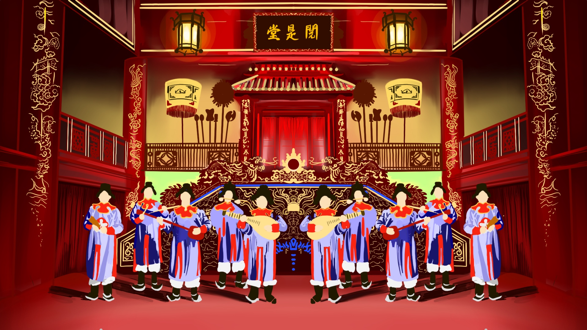
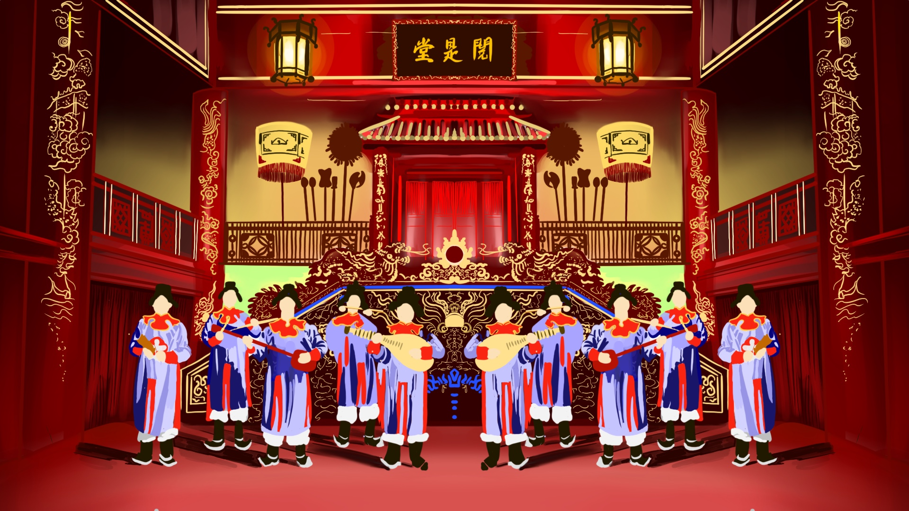

NHÃ NHẠC - VIETNAMESE IMPERIAL COURT MUSIC
Nhã nhạc (Vietnamese court music) is a traditional genre of music that originated in the Nguyễn dynasty (1802–1945) and was performed in the Vietnamese royal courts. It combines vocal and instrumental music, often played with a full orchestra, and includes ceremonial music for royal events, festivals, and religious rituals. Nhã nhạc is known for its refined and sophisticated style, with influences from Chinese and Southeast Asian music. In 2003, it was recognized as a UNESCO Intangible Cultural Heritage due to its cultural significance and unique performance practices.